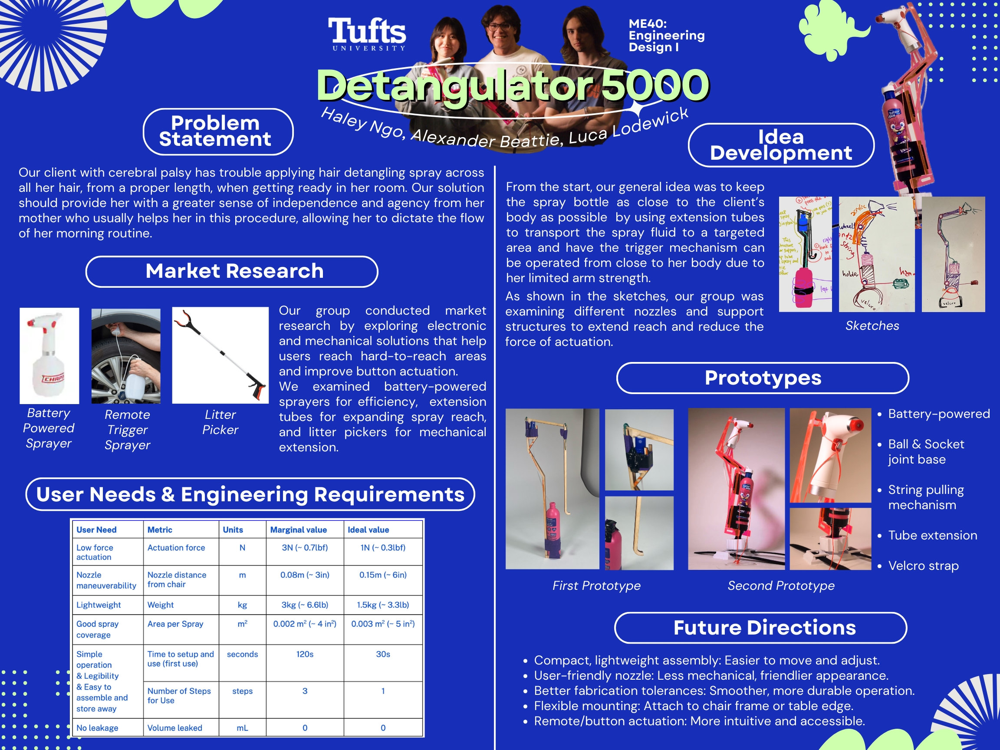
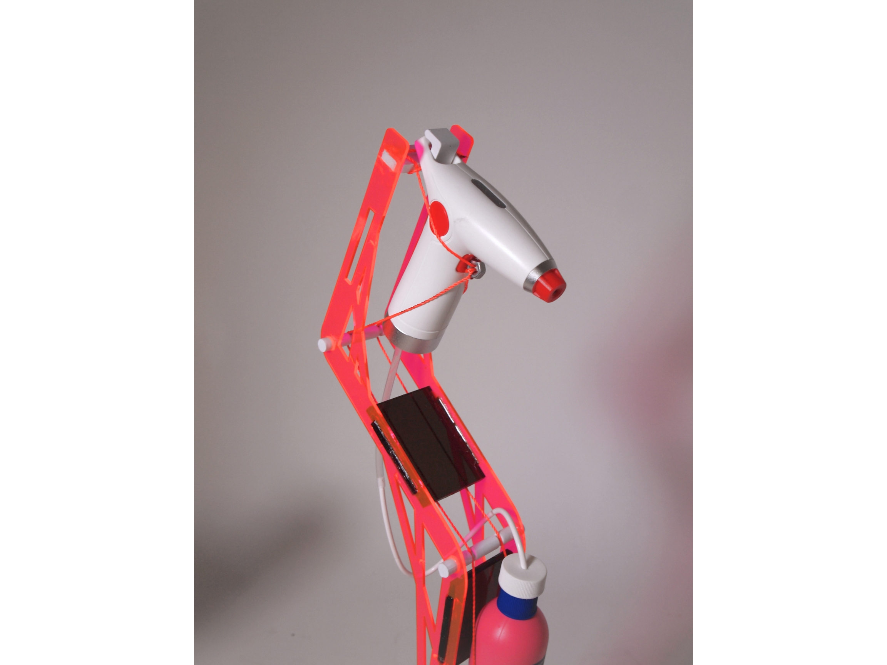
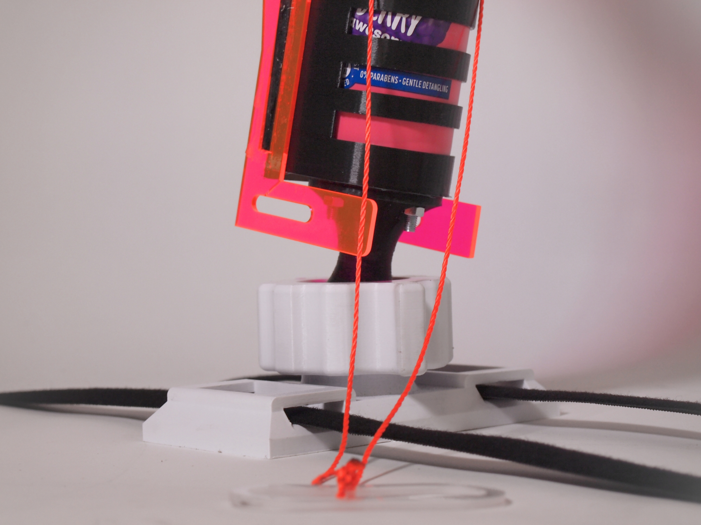
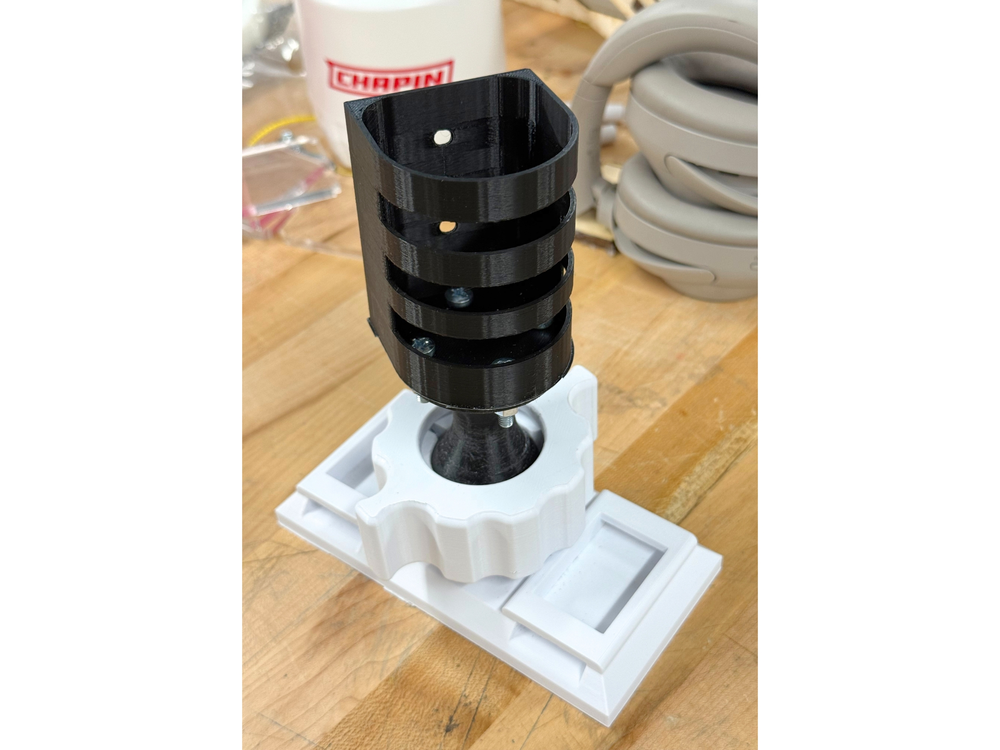

Engineering Design: Dallas' Detangulator





Project Overview
Dallas' Detangulator is a mechanical solution designed to automatically untangle headphone wires using a series of geared rollers and sensors. This project was completed as part of a senior design course, focusing on hands-on prototyping, iterative design, and teamwork.
Key Features & Highlights
- Custom 3D-printed chassis and gear train
- Laser-cut acrylic panels for structure and visibility
- Arduino-based control system for motor and sensor integration
- Iterative prototyping and testing for reliability
- Team collaboration: mechanical, electrical, and software integration
Engineering Process
The project began with brainstorming and concept sketches, followed by CAD modeling in SolidWorks. Prototypes were built using 3D printing and laser cutting, with each iteration tested for performance. The final design incorporated feedback from user testing and peer reviews.
What I Learned
- Advanced CAD and rapid prototyping techniques
- Integrating electronics with mechanical systems
- Project management and documentation
- Presenting technical work to both technical and non-technical audiences